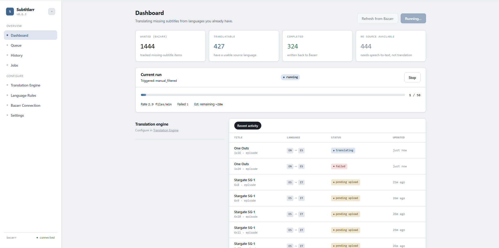
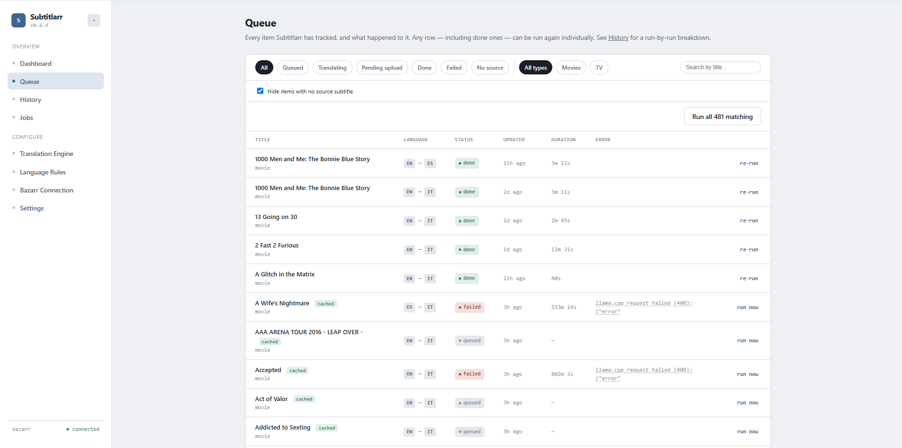
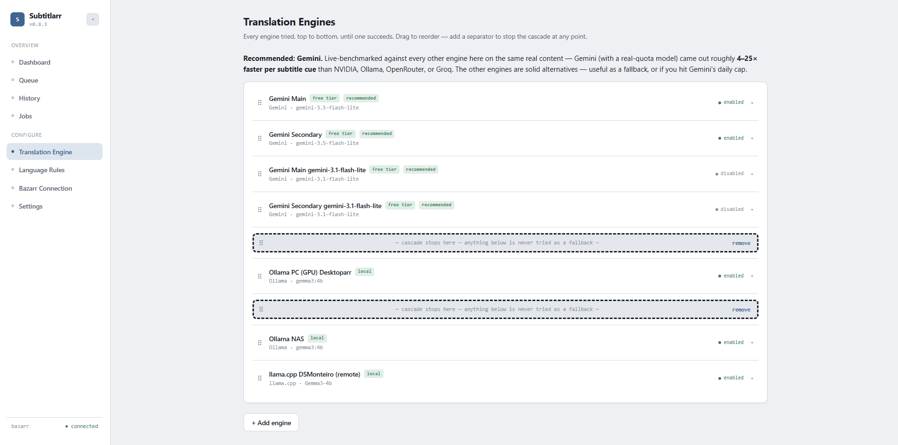
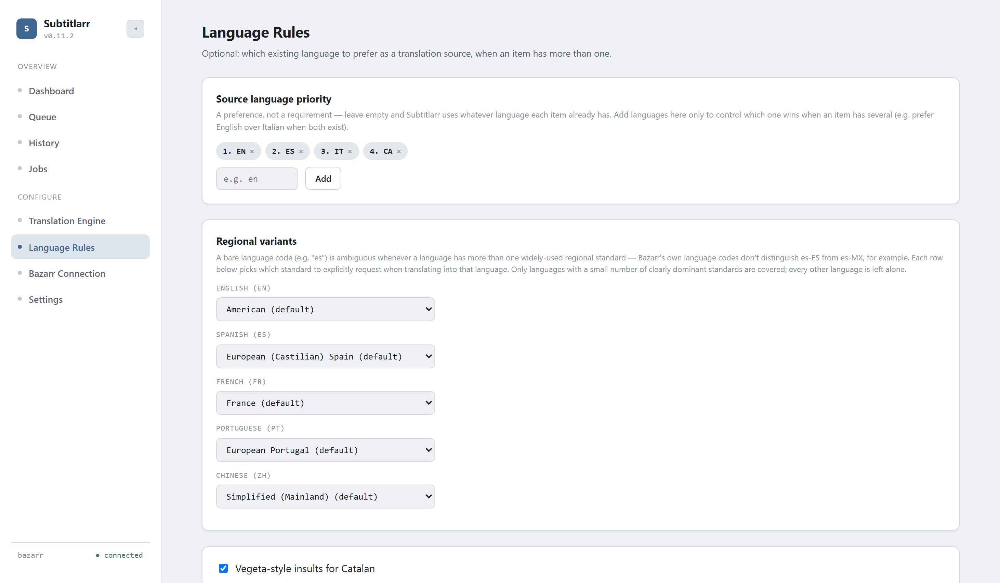
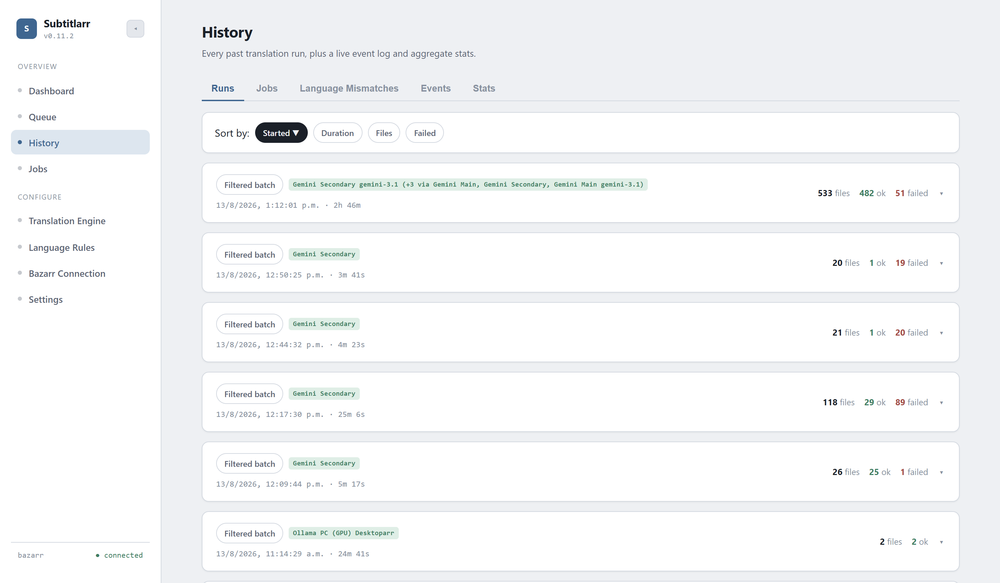
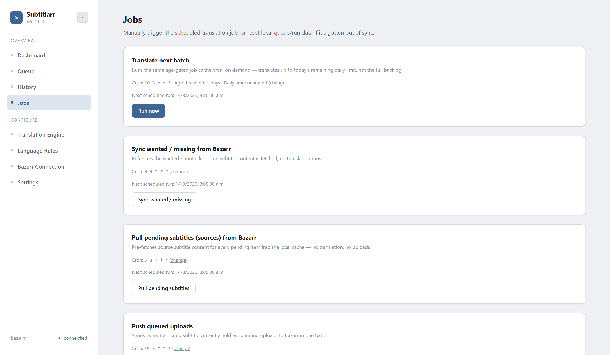
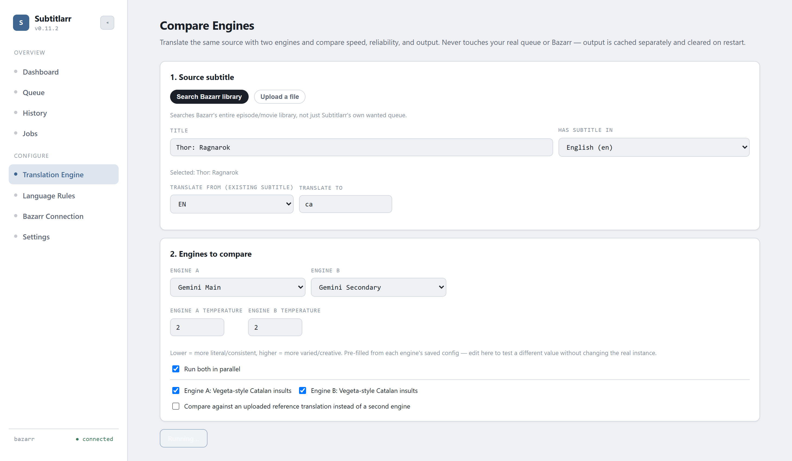
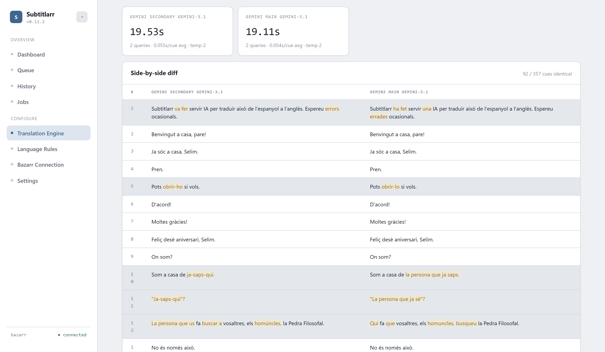

Features
A tour of the actual UI — what each page does and why it's built that way.
Dashboard
At-a-glance view of the current run (if any), recent activity, and quick stats. The place to check "is anything happening right now."

Queue
Every item Subtitlarr has tracked and what happened to it — filterable by status, type, and search. Any row, including already-done ones, can be re-run individually. On the Done/Pending-upload tabs, the Error column becomes a Model column instead, since those items have no error — letting you find and bulk re-run everything a specific (e.g. weaker fallback) model translated.

Translation Engine
Build an ordered cascade of any mix of engines — Ollama, llama.cpp, Gemini, NVIDIA NIM, OpenRouter, Groq. Drag to reorder, insert a separator to fence off a group from automatic fallback, and each instance gets its own independent rate-limit cooldown.

Language Rules
Source-language priority for picking which existing subtitle to translate from when an item has several, plus per-language regional-variant control — Spanish (Spain/Mexican/Argentine/Latin American), Portuguese (Portugal/Brazil), English (American/British), French (France/Québécois/Belgian/Swiss), and Chinese (Simplified/Traditional).

History
Every past run with a full per-item breakdown, plus a live structured event log (rate limits, fallbacks, content blocks) and aggregate stats across all runs.

Jobs
Manually trigger the scheduled translation job, sync jobs, or reset local queue/run data if it's gotten out of sync with Bazarr — without waiting for the next cron fire.

Compare Engines
Linked from the top of the Translation Engine page. Run the same source subtitle through two engine instances side by side — or one instance against an uploaded reference translation — to judge speed, reliability, and actual output quality before committing an instance to your real cascade. Source can be searched from Bazarr's whole library or uploaded directly. Nothing here touches your real queue or Bazarr; output is sandboxed and cleared on restart.


At a glance
Automatic rate-limit cooldown
3 consecutive failures against an engine instance trip a 24h cooldown, skipped without a live round-trip — clearable early via a Test Connection or the Jobs page's manual "clear all rate limits."
Per-item model tracking
Every translated item records the exact model that produced it, separate from the instance's display name — filterable and bulk-re-runnable from the Queue page.
Stop a running batch
An in-app way to cancel a run cleanly after the in-flight item finishes, without killing the whole server process.
Queue uploads for a batch push
Hold translated subtitles locally and push them all to Bazarr in one burst later — useful if uploading wakes a sleeping NAS.